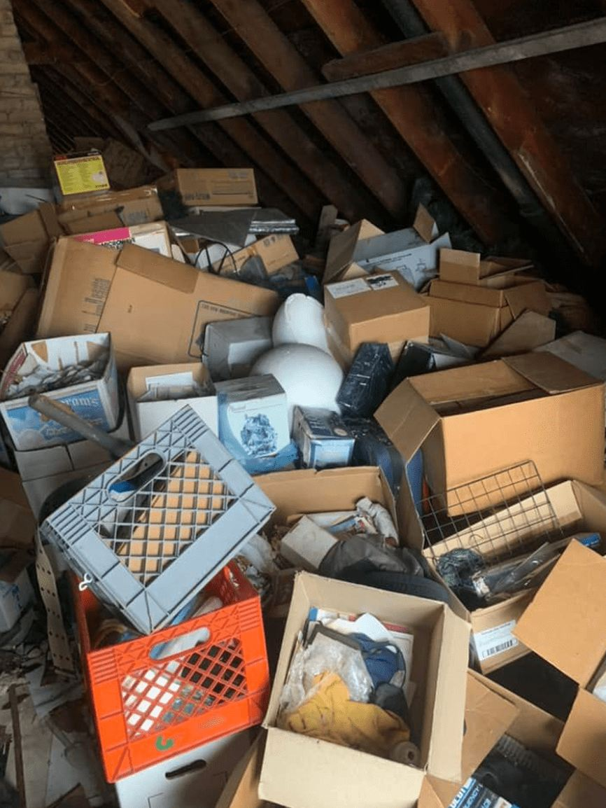
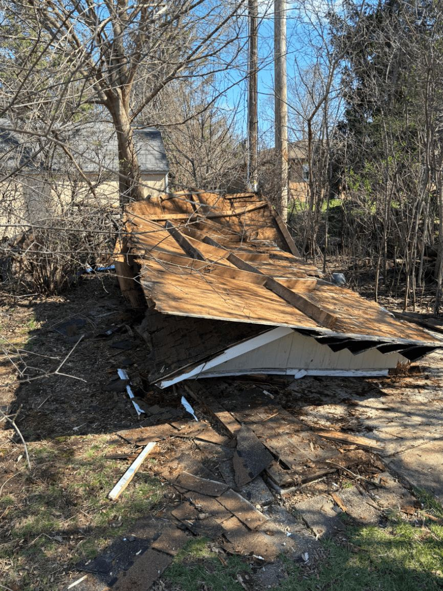

CNC Cleaning & Hauling · Milwaukee, WI
Call Carlos.Junk gone.
Junk removal, estate clean-outs and property trash-outs. Make room for what comes next.
A little less clutter.
A lot more space.
From furniture to full clean-outs, start with the service that fits your project.
Furniture removal
Furniture removal and hauling for small and big projects.
Talk through your project ↗
Attics & household clutter
Real spaces from CNC’s own gallery.

Yard & demolition debris
Outside yard removal and demolition removal.
Clean-outs, large or small
Estate, hoarding and foreclosure clean-outs.
Also: aluminum pick-up · post-construction cleanup · house cleaning · commercial cleaning
Clear communication. A real person.
Your space.
Handled with care.
“They completed the job to spec and price.”Alpha J. · Testimonial published on CNC’s website
Let’s talk about your clean-out.
414-338-2500 ↗carlos@cncenterprize.comServing Milwaukee, Milwaukee County
and Waukesha County.
Monday–Friday: 9AM–5PM
Saturday: 10AM–2PM
Sunday: by appointment only
Saturday: 10AM–2PM
Sunday: by appointment only
A first look at your new site.
Local identity. Real work. An easier way to get in touch.